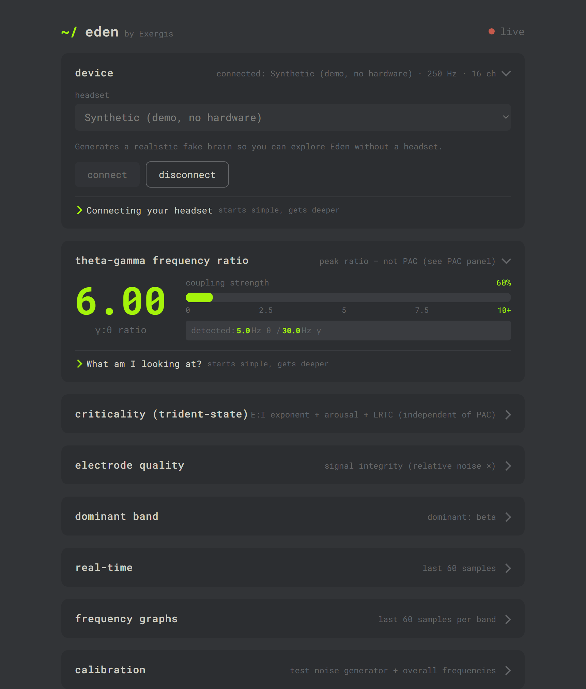

See what actually sharpens your mind.
Meditation, cognitive training, deep work — Eden shows their effect on your theta–gamma coupling and cortical criticality in real time, turning “I think this helps” into something you can watch. Two rigorous readings, one live picture of the state behind your focus.
Point it at a state — watch your brain respond
Choose what you’re doing and see how theta–gamma coupling and criticality shift. This is an illustrative simulation with sample data, not a real recording — the app computes exactly this, live, from your own EEG.
- delta1–4 Hz0.00
- theta4–8 Hz0.00
- alpha8–13 Hz0.00
- beta13–30 Hz0.00
- gamma30–50 Hz0.00
Sample data for illustration only — not a real EEG recording. Install Eden to measure your own brain.
Three honest readouts, side by side
Every claim is gated behind oscillation detection, artifact rejection, surrogate significance testing, and a harmonic-artifact safeguard — and reported with a confidence measure instead of a single confident-sounding number.
Live brainwaves
Eight EEG channels at 250 Hz, sorted into delta, theta, alpha, beta and gamma, with your dominant rhythm highlighted as it changes moment to moment.
Theta–gamma coupling (PAC)
Per-channel phase–amplitude coupling via Tort’s Modulation Index, tested against a surrogate null — reported with effect size, significance, agreement and harmonic risk, never one opaque score.
Cortical criticality
A separate estimate of whether your cortex is subcritical, near-critical, or supercritical — computed independently of PAC, so any relationship between them is observed, not baked in.
See how your mind responds to what you do
Coupling strength and criticality are independent readouts, but together they sketch your cognitive state: strong, clean theta–gamma coupling tracks memory and focus, and a near-critical cortex is the balanced, “in the zone” state. Watched side by side — always against your own baseline — Eden becomes a lens for self-experimentation: a way to observe how different practices move your brain toward, or away from, its optimized zone.
Meditation & flow
Watch coupling and criticality shift during focused-attention or open-awareness meditation, and see whether deep sessions pull you toward the near-critical sweet spot.
Cognitive training
Compare your state through demanding working-memory and flexibility drills — dual-, quad-, even penta-N-back, image streaming, Relational Frame Theory — where focus, flexibility and awareness are all pushed hard.
Diet & nootropics
Run simple before/after comparisons around inputs like high-flavanol cacao, looking for shifts against your personal baseline rather than reading into a single number.
Deep work
Check whether you’re actually in the high-coupling, near-critical zone before and during focused work — instead of guessing at your own state.

The Eden web app, live in your own browser — served from your machine, not the cloud. (Shown in synthetic demo mode.)
From invisible electricity to a live picture
A headset captures the buzz; a small Python program does all the math; your browser draws it — updating about once a second.
Your brain
Billions of neurons fire together in repeating rhythms, adding up to tiny measurable voltages.
The headset
8 electrodes sample each spot 250× a second and stream over Bluetooth — well above the Nyquist limit for gamma.
server.py
A local Flask server keeps a rolling buffer, runs the full analysis each interval, and streams results over SSE.
Your browser
The page subscribes to that one-way feed and repaints charts, numbers and colors — live, no refresh.
PAC is famously easy to fake. Eden refuses to be fooled.
It behaves like a strict, skeptical scientist and won’t claim coupling until it has ruled out the boring explanations.
Each spot on its own
All 8 channels are analyzed separately, never blended first — averaging can cancel real coupling that sits at different phases across the scalp.
Confirms a real slow wave
A specparam/FOOOF-style fit separates the 1/f background from true peaks. No genuine theta peak → “θ unreliable — PAC not calculated.”
Distrusts the edges
A peak landing exactly on a band boundary (say 30 Hz) is flagged as suspect — usually a filter edge effect, not a real oscillator.
Throws out bad moments
Blinks, jaw clenches, dropouts and muscle bursts are detected and discarded. Dropouts are never interpolated — inventing data can manufacture coupling.
Real coupling, not a stand-in
Strength is the Tort Modulation Index — how far gamma’s distribution across theta phase sits from perfectly flat (KL divergence).
Compares against luck
A time-shift surrogate null is built by scrambling timing many times; the real MI is expressed as a z-score and percentile it must clearly beat.
Watches for fakers
Sharp, non-sinusoidal theta imitates gamma via harmonics. Eden rates harmonic risk — and a too-perfect 10:1 ratio raises suspicion, not confidence.
Rehearsed on known answers
The whole pipeline is validated on synthetic signals with known ground truth — genuine PAC, none, harmonics, noise, transients, bursts, dropouts — and passes every check.
Your brain plays several notes at once
Eden measures the power in each band — but power alone never tells you whether two bands cooperate, only how loud each is. That’s why a dedicated coupling measure exists.
| Wave | Speed | Usually seen when… |
|---|---|---|
| Delta | 1–4 Hz | Deep, dreamless sleep |
| Theta | 4–8 Hz | Sleepy, daydreaming, meditating — the slow partner |
| Alpha | 8–13 Hz | Calm and relaxed, eyes closed |
| Beta | 13–30 Hz | Awake, thinking, focused |
| Gamma | 30–50 Hz | Hard concentration — the fast partner |
How “tuned” is your cortex right now?
Read from three independent clues — the 1/f slope (an excitation/inhibition proxy), the arousal balance of fast rhythms vs alpha, and long-range temporal correlations — and computed completely separately from PAC.
under-aroused, sluggish near-critical
“in the zone” supercritical
over-aroused, racing
The panel also suggests a Trident remedy — which rhythm to gently encourage back toward the sweet spot: gamma to wake an under-aroused brain, alpha to calm an over-aroused one, theta to hold the balance. Educational, not medical advice.
Runs on your machine in one step
Eden’s live analyzer talks to a headset paired to your computer, so it runs locally — the web UI is simply served from localhost. No cloud, no account, no data leaving your device.
Prefer to do it by hand? See the step-by-step guide. Requires Python 3.10+. Then open http://127.0.0.1:5000 and pick your headset in the browser.
No headset? Explore right away
Streams a realistic simulated brain so you can see the whole UI with no hardware.
Works with many headsets
Any BrainFlow-supported board — picked right in the browser, no command line needed.